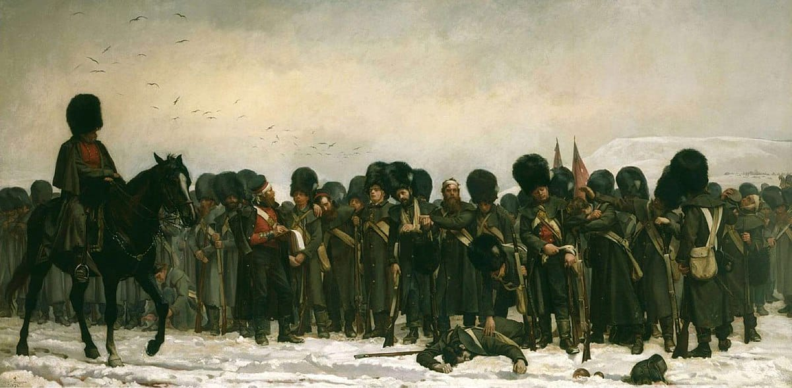

Art is a Magical thing.
Featured artist:Elizabeth Thompson(1846-1933)
We are featuring Elizabeth Thompson at the top of this list because she was a "Door Breaker" for women in the art world and simply too talented to be ignored.

"Calling the Roll After An Engagement, Crimea" a.k.a. "Roll Call"
Created in 1874 | Size: 37 x 72 | Oil on Canvas
Elizabeth Southerden Thompson, also known as Lady Butler, was a British painter who specialized in painting scenes from British military campaigns and battles, including the Crimean War and the Battle of Waterloo.
Roll Call, a painting of the Crimean War, was an instant hit among buyers, and was bought by Queen Elizabeth to be hung in the royal palace. Why is the painting so relevant? It was created by a woman, which was not accepted in the 19th century.
Roll Call was one of the best paintings at the Royal Academy;
however, she was never officially accepted into the Royal Academy and her masterpiece later fell out of critical favor; this was all because of the simple fact that she was a woman.
In her quiet, dismissive ways, Elizabeth Thompson helped break down barriers for women simply because her talent was too great to be ignored. She was featured as one of the women Malcolm Gladwell calls "Door breakers" in his Podcast titled: The Lady Vanishes.
Leonardo Da Vinci (1452 - 1519)
|
Who Are The Most Famous Artists in History? | Lahaina Galleries Leonardo da Vinci is one of the most famous Renaissance artists in the world and is widely recognized as one of the most influential artists of all time. His masterpiece, Mona Lisa, is permanently displayed in the Louvre Museum in France protected behind bulletproof glass. Beyond painting, da Vinci was also a scientist and inventor; he created plenty of drawings of the human body and many modern technologies found in the world today. Simply put, da Vinci was undoubtedly a genius. Among his famous masterpieces, there are also the Last Supper and The Lady with an Ermine. Even to this day, his works are not fully understood and he still serves as inspiration for many, many aspiring artists. |

|
Michelangelo (1465 - 1564)

|
Who Are The Most Famous Artists in History? | Lahaina Galleries Michelangelo is one of the most well-known artists of all time. He was a painter, a sculptor and an architect who also happened to write poetry from time to time. Most know him from his iconic painting of the Sistine Chapel or his creation of one of the greatest frescoes of the Renaissance, The Last Judgment, 20 years later. Michelangelo's other creations, the sculpture David and Pietà, the St. Peter’s Basilica in Rome, the famous carving of Moses on the tomb for Pope Julian II, and the design for the Laurentian Library at San Lorenzo’s Church, all serve as inspirations for young artists of the 21st century. |
Vincent Van Gogh (1853 - 1890)
Who Are The Most Famous Artists in History? | Lahaina Galleries Vincent van Gogh was a Dutch post impressionist painter widely known for being the artist who cut off part of his own ear. More importantly, however, his works of art, are among the most famous and cherished of all time. He inspired upcoming generations of artists especially through his technique of painting with flurries of thick brushstrokes made up of bright colors squeezed straight from the tube. Among some of his most famous paintings are Starry Night, Cafe Terrace at Night, and Sunflowers. View Robert Lyn Nelson's Van Gogh series: Click Here